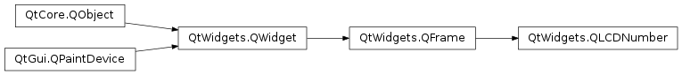

QLCDNumber¶
Synopsis¶
Functions¶
- def
checkOverflow(num) - def
checkOverflow(num) - def
digitCount() - def
intValue() - def
mode() - def
segmentStyle() - def
setDigitCount(nDigits) - def
setMode(arg__1) - def
setSegmentStyle(arg__1) - def
smallDecimalPoint() - def
value()
Slots¶
- def
display(num) - def
display(num) - def
display(str) - def
setBinMode() - def
setDecMode() - def
setHexMode() - def
setOctMode() - def
setSmallDecimalPoint(arg__1)
Detailed Description¶
The
PySide2.QtWidgets.QLCDNumberwidget displays a number with LCD-like digits.
It can display a number in just about any size. It can display decimal, hexadecimal, octal or binary numbers. It is easy to connect to data sources using the
PySide2.QtWidgets.QLCDNumber.display()slot, which is overloaded to take any of five argument types.There are also slots to change the base with
PySide2.QtWidgets.QLCDNumber.setMode()and the decimal point withPySide2.QtWidgets.QLCDNumber.setSmallDecimalPoint().
PySide2.QtWidgets.QLCDNumberemits thePySide2.QtWidgets.QLCDNumber.overflow()signal when it is asked to display something beyond its range. The range is set byPySide2.QtWidgets.QLCDNumber.setDigitCount(), butPySide2.QtWidgets.QLCDNumber.setSmallDecimalPoint()also influences it. If the display is set to hexadecimal, octal or binary, the integer equivalent of the value is displayed.These digits and other symbols can be shown: 0/O, 1, 2, 3, 4, 5/S, 6, 7, 8, 9/g, minus, decimal point, A, B, C, D, E, F, h, H, L, o, P, r, u, U, Y, colon, degree sign (which is specified as single quote in the string) and space.
PySide2.QtWidgets.QLCDNumbersubstitutes spaces for illegal characters.It is not possible to retrieve the contents of a
PySide2.QtWidgets.QLCDNumberobject, although you can retrieve the numeric value withPySide2.QtWidgets.QLCDNumber.value(). If you really need the text, we recommend that you connect the signals that feed thePySide2.QtWidgets.QLCDNumber.display()slot to another slot as well and store the value there.Incidentally,
PySide2.QtWidgets.QLCDNumberis the very oldest part of Qt, tracing its roots back to a BASIC program on the Sinclair Spectrum .
-
class
PySide2.QtWidgets.QLCDNumber([parent=nullptr])¶ -
class
PySide2.QtWidgets.QLCDNumber(numDigits[, parent=nullptr]) Parameters: - parent –
PySide2.QtWidgets.QWidget - numDigits –
PySide2.QtCore.uint
Constructs an LCD number, sets the number of digits to 5, the base to decimal, the decimal point mode to ‘small’ and the frame style to a raised box. The
PySide2.QtWidgets.QLCDNumber.segmentStyle()is set toOutline.The
parentargument is passed to thePySide2.QtWidgets.QFrameconstructor.See also
PySide2.QtWidgets.QLCDNumber.setDigitCount()PySide2.QtWidgets.QLCDNumber.setSmallDecimalPoint()Constructs an LCD number, sets the number of digits to
numDigits, the base to decimal, the decimal point mode to ‘small’ and the frame style to a raised box. ThePySide2.QtWidgets.QLCDNumber.segmentStyle()is set toFilled.The
parentargument is passed to thePySide2.QtWidgets.QFrameconstructor.- parent –
-
PySide2.QtWidgets.QLCDNumber.Mode¶ This type determines how numbers are shown.
Constant Description QLCDNumber.Hex Hexadecimal QLCDNumber.Dec Decimal QLCDNumber.Oct Octal QLCDNumber.Bin Binary If the display is set to hexadecimal, octal or binary, the integer equivalent of the value is displayed.
-
PySide2.QtWidgets.QLCDNumber.SegmentStyle¶ This type determines the visual appearance of the
PySide2.QtWidgets.QLCDNumberwidget.Constant Description QLCDNumber.Outline gives raised segments filled with the background color. QLCDNumber.Filled gives raised segments filled with the windowText color. QLCDNumber.Flat gives flat segments filled with the windowText color.
-
PySide2.QtWidgets.QLCDNumber.checkOverflow(num)¶ Parameters: num – PySide2.QtCore.doubleReturn type: PySide2.QtCore.boolReturns
trueifnumis too big to be displayed in its entirety; otherwise returnsfalse.
-
PySide2.QtWidgets.QLCDNumber.checkOverflow(num) Parameters: num – PySide2.QtCore.intReturn type: PySide2.QtCore.boolThis is an overloaded function.
Returns
trueifnumis too big to be displayed in its entirety; otherwise returnsfalse.
-
PySide2.QtWidgets.QLCDNumber.digitCount()¶ Return type: PySide2.QtCore.intReturns the current number of digits.
-
PySide2.QtWidgets.QLCDNumber.display(num)¶ Parameters: num – PySide2.QtCore.intThis is an overloaded function.
Displays the number
num.
-
PySide2.QtWidgets.QLCDNumber.display(num) Parameters: num – PySide2.QtCore.doubleThis is an overloaded function.
Displays the number
num.
-
PySide2.QtWidgets.QLCDNumber.display(str) Parameters: str – unicode Displays the number represented by the string
s.This version of the function disregards
PySide2.QtWidgets.QLCDNumber.mode()andPySide2.QtWidgets.QLCDNumber.smallDecimalPoint().These digits and other symbols can be shown: 0/O, 1, 2, 3, 4, 5/S, 6, 7, 8, 9/g, minus, decimal point, A, B, C, D, E, F, h, H, L, o, P, r, u, U, Y, colon, degree sign (which is specified as single quote in the string) and space.
PySide2.QtWidgets.QLCDNumbersubstitutes spaces for illegal characters.
-
PySide2.QtWidgets.QLCDNumber.intValue()¶ Return type: PySide2.QtCore.int
-
PySide2.QtWidgets.QLCDNumber.mode()¶ Return type: PySide2.QtWidgets.QLCDNumber.Mode
-
PySide2.QtWidgets.QLCDNumber.overflow()¶
-
PySide2.QtWidgets.QLCDNumber.segmentStyle()¶ Return type: PySide2.QtWidgets.QLCDNumber.SegmentStyle
-
PySide2.QtWidgets.QLCDNumber.setBinMode()¶ Calls
PySide2.QtWidgets.QLCDNumber.setMode()(Bin). Provided for convenience (e.g. for connecting buttons to it).
-
PySide2.QtWidgets.QLCDNumber.setDecMode()¶ Calls
PySide2.QtWidgets.QLCDNumber.setMode()(Dec). Provided for convenience (e.g. for connecting buttons to it).
-
PySide2.QtWidgets.QLCDNumber.setDigitCount(nDigits)¶ Parameters: nDigits – PySide2.QtCore.intSets the current number of digits to
numDigits. Must be in the range 0..99.
-
PySide2.QtWidgets.QLCDNumber.setHexMode()¶ Calls
PySide2.QtWidgets.QLCDNumber.setMode()(Hex). Provided for convenience (e.g. for connecting buttons to it).
-
PySide2.QtWidgets.QLCDNumber.setMode(arg__1)¶ Parameters: arg__1 – PySide2.QtWidgets.QLCDNumber.ModeSee also
-
PySide2.QtWidgets.QLCDNumber.setOctMode()¶ Calls
PySide2.QtWidgets.QLCDNumber.setMode()(Oct). Provided for convenience (e.g. for connecting buttons to it).
-
PySide2.QtWidgets.QLCDNumber.setSegmentStyle(arg__1)¶ Parameters: arg__1 – PySide2.QtWidgets.QLCDNumber.SegmentStyle
-
PySide2.QtWidgets.QLCDNumber.setSmallDecimalPoint(arg__1)¶ Parameters: arg__1 – PySide2.QtCore.bool
-
PySide2.QtWidgets.QLCDNumber.smallDecimalPoint()¶ Return type: PySide2.QtCore.bool
-
PySide2.QtWidgets.QLCDNumber.value()¶ Return type: PySide2.QtCore.double
© 2018 The Qt Company Ltd. Documentation contributions included herein are the copyrights of their respective owners. The documentation provided herein is licensed under the terms of the GNU Free Documentation License version 1.3 as published by the Free Software Foundation. Qt and respective logos are trademarks of The Qt Company Ltd. in Finland and/or other countries worldwide. All other trademarks are property of their respective owners.